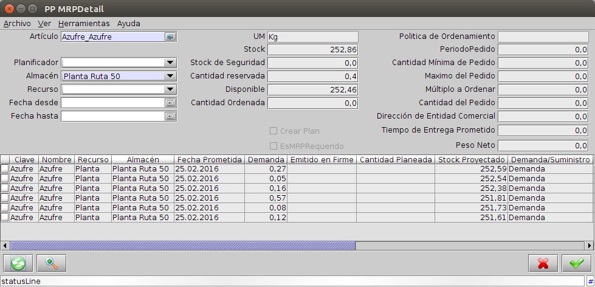

Manufactura - Revisión a detalle¶
- Acceder a la opción del menú Gestión de Planificación → MRP → Revisión a detalle. El sistema presenta una ventana como lo muestra la Imagen 50.

Imagen 49: Revisión a detalle
En el encabezado se debe seleccionar el Artículo, planta y Almacén y el período de tiempo para el que se quiere analizar las demandas y los suministros. Alguno de estos parámetros pueden ser dejados en blanco.
Al presionar el botón para actualizar (verde en la parte inferior izquierda), se visualizan la información relacionada con el Recurso de Manufactura donde el producto va a ser manufacturado, los almacenes de demanda y suministro, las fechas, las cantidades y si corresponden a demanda o a suministro.
Los campos detallados son:
- Cantidad de la demanda: El origen de la demanda puede ser tanto demanda independiente, cómo componentes requeridos por una orden de manufactura.
- Fecha prometida: Es la fecha establecida para la demanda o el suministro.
- Emitido en firme: Muestra las cantidades de las órdenes de suministro que serán recibidas en la fecha prometida. El origen de esta recepción puede ser una orden de compra abierta, una requisición, una orden de manufactura abierta o una orden planeada.
- Stock proyectado: Se calcula a partir de la cantidad inicial del stock disponible con el agregado de suministros y retiros. Las cantidades negativas indican que es necesaria generar una orden de planeamiento para satisfacer la demanda, de forma tal que al finalizar el proceso de producción el Stock Proyectado sea igual a cero.
- Demanda/Suministro: Tiene dos posibles valores: Demanda para si el producto es un componente alcanzado por una OM o suministro si se trata de un producto terminado o una requisición.
- Tipo de Documento: Indica el tipo de demanda: Orden de venta, Orden de compra abierta, Orden de Manufactura.
- Nro. de documento: Muestra el número del documento relacionado.
- Estados del documento: Muestra el estado del documento relacionado.